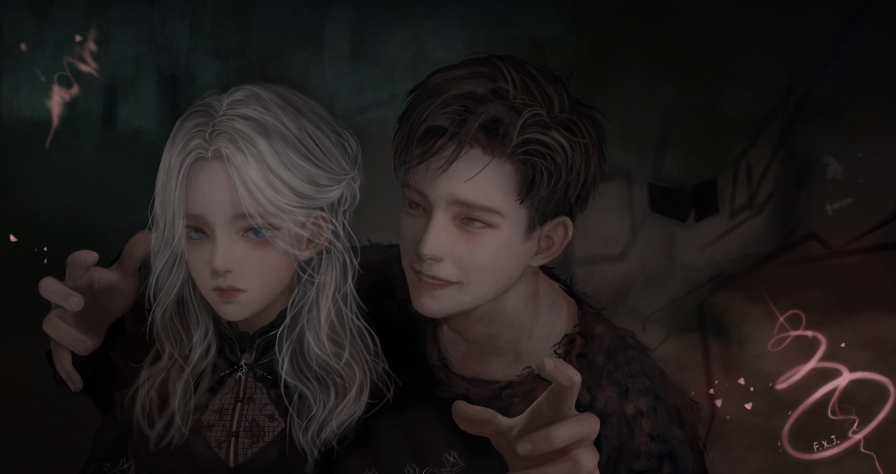
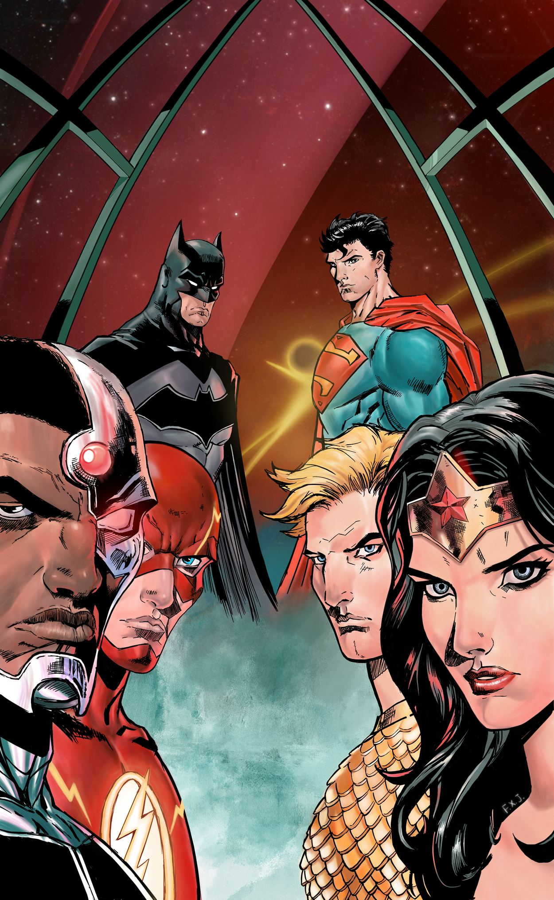

@fengxijia
Ph.D. candidate, National University of Singapore
Work worth doing should put people first: expand what they get to experience, and make them happier.
Every man is a piece of the continent.
Latest
A gallery of 38,000+ figures and tables cropped from 2,800+ papers at the top computer science venues, 2021 to 2026. Each one is labelled by type and linked to its paper, venue and award.
Filter by figure type, venue, award tier or drawing style, search captions and arXiv ids, and share any view by URL. Made for picking a reference figure before drawing one, or before asking a model to.
paperfigure.net → github.com/fengxijia/PaperFigureLib →A desktop pet for macOS that also starts your work. Each character carries its own persona config; dialogue runs through Gemini, GPT or Claude, and voice through ElevenLabs, so it can read a workflow or a note aloud in that character's voice.
One click on a saved workflow opens every app, page and file that job needs.
github.com/fengxijia/CozyPet →An LLM walks you through your own relationship and tells you what it sees. Anonymous, no account, nothing stored server-side. About 2k visits so far.
The framework scores value alignment, communication, conflict handling, boundaries and long-term commitment.
github.com/fengxijia/loveAudit →A peer support community for graduate researchers. Founder, rule maker and content creator. Researchers who came through depression or anxiety share what worked with people going through it now.
The site carries CBT self-help material, explainer videos and posts on what actually comes up: failed experiments, advisor relationships, paper pressure, isolation, procrastination.
What people report there is also what the peer-support simulation was built to model.
Education
Experience
Awards
Drawing is a way into an inner world, and a way to stay there for a while. Both pictures are drawn by hand.
The camera did not replace painting. It gave painting somewhere else to go. AIGC looks like the same kind of arrival, a new source of material and a strong tool in the hand of whoever is drawing.

